MindLoom User Guide
MindLoom is a mind-mapping and planning tool that lives in a single file. Open it in your browser and start. There is nothing to install, no account, and your work stays on your computer.
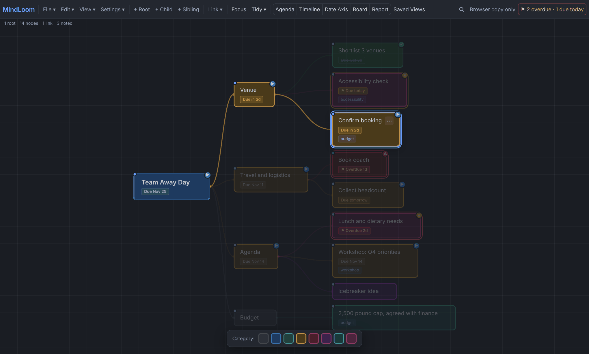
What you can do with it
Think visually
Branch ideas out on an unlimited canvas, link them, colour them and rearrange them freely.
Plan the work
Give any node an owner, status, dates, checklist and progress. See it as an Agenda, Timeline, Board or calendar.
Report
Produce a ready-to-send status report with a Red, Amber or Green health line, with one click.
Map how things connect
Optionally switch on Application Mapping Structures to show what relies on what, for migrations and change planning.
How to read this guide
Use the contents on the left, or the search box at the top. If you are new, read Quick start, then try a recipe. Everything is also in the keyboard shortcut list and the questions and fixes section. Developers and IT teams will find the technical reference at the end.
Quick start
Five minutes to your first useful map.
- Open the file. Double-click
MindLoom.html. It opens in your normal browser and works without an internet connection. You start on a fresh map with one central idea. - Name the central idea. Select it and press F2, type a name and press Enter.
- Add branches. With a node selected, press Tab to add a child and Enter to add a sibling. Type, press Enter, and keep going.
- Add details. Select a node and press I to open its details panel: set a status, an owner and a due date.
- See it another way. Press A for the Agenda, K for the Board, T for the Timeline or R for a status report.
- Save it. Press Ctrl+S to save a file you can keep, email or open later.
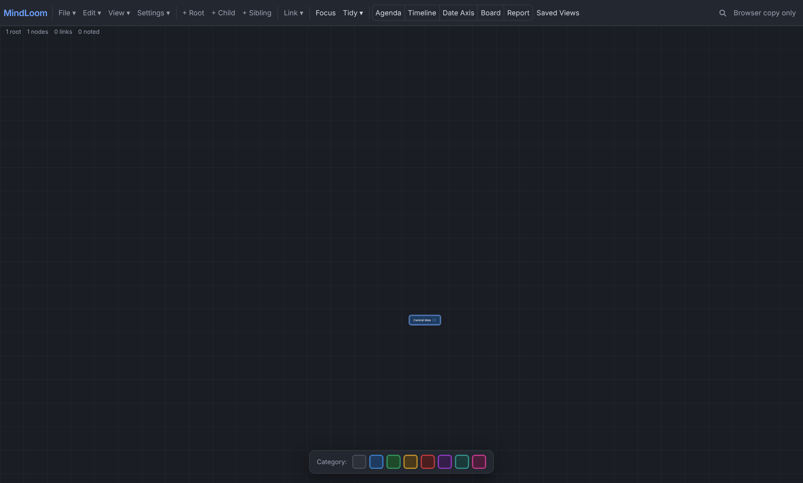
Want to explore first?
MindLoom has built-in demo maps. Open File → About MindLoom, click the version number five times, and choose a demo. You can also download the example maps and open them with File → Load.
Step-by-step recipes
Plan a project in ten minutes
- Name the root node after the project. Press Tab to add the main phases as children.
- Use Edit → Add several nodes to paste a whole list of tasks in one go (see Add several nodes).
- Select each task, press I and set an owner and a due date. Use the quick buttons (Today, +1 week, +1 month) to save time.
- Link tasks that must happen in order using Depends on in the details panel (Dependencies).
- Press T for the Timeline to see the plan as a Gantt chart. Drag bars to re-plan.
- Press R for a status report you can paste into an email.
Track an application migration
- Turn on Settings → Application Mapping Structures for this map.
- Add one node per application (for example Jenkins, Bitbucket, Active Directory). Group them under headings like CI/CD and Identity.
- Link applications that talk to each other with Link or L, and choose a link type such as builds from or authenticates via.
- Give each application a Migration wave and an owner.
- Select an application and choose Show impact to see everything that relies on it, before you move it.
- Run Dependency check to find items with no links, no owner, or a wave that looks out of order.
A ready-made version is in the example maps as application-migration.json. Full details are in Application Mapping Structures.
Send a weekly status update
- Keep statuses and due dates current as the week goes on.
- Press R. Type a one-line headline if you want one.
- Choose Copy formatted and paste into Outlook, Teams, Gmail or Word. Headings and bullets arrive as real formatting.
- Next week the report shows what changed since this one (see Status report).
Turn a meeting's notes into a map
- Copy your notes as a list with indented sub-points.
- Open Edit → Add several nodes and paste. The preview shows how many nodes will be made.
- Choose As separate root nodes or Under: the selected node, then Add nodes.
- Assign owners and dates to the action items and open the Agenda (A) to see who owes what.
Working with nodes
A map is made of nodes. Each node has a name and can have children, so ideas branch out from a central root. You can have several roots on one canvas.
Adding, editing and removing
| To do this | Do this |
|---|---|
| Add a child node | Select a node, press Tab (or + Child) |
| Add a sibling | Press Enter (or + Sibling) |
| Add a new root | + Root on the toolbar |
| Add a node where you click | Double-click empty canvas |
| Rename | F2 or double-click the node |
| Delete | Del |
| Duplicate a branch | Right-click → Duplicate subtree |
| Detach a branch as its own root | Right-click → Detach as root |
| Collapse or expand | Space, or View → Collapse all / Expand all |
| Undo or redo | Ctrl+Z and Ctrl+Y |
Moving around
Scroll to zoom and drag the empty canvas to pan. F fits the whole map in view and Home re-centres it. The arrow keys move between nodes. A minimap helps on large maps. On a phone or tablet, drag to move, pinch to zoom, long-press for the menu and use the quick-action bar at the bottom.
Moving and re-parenting
Drag a node to move it, and its children come with it. To move a node under a different parent, hold Ctrl while dragging and drop it onto the new parent.
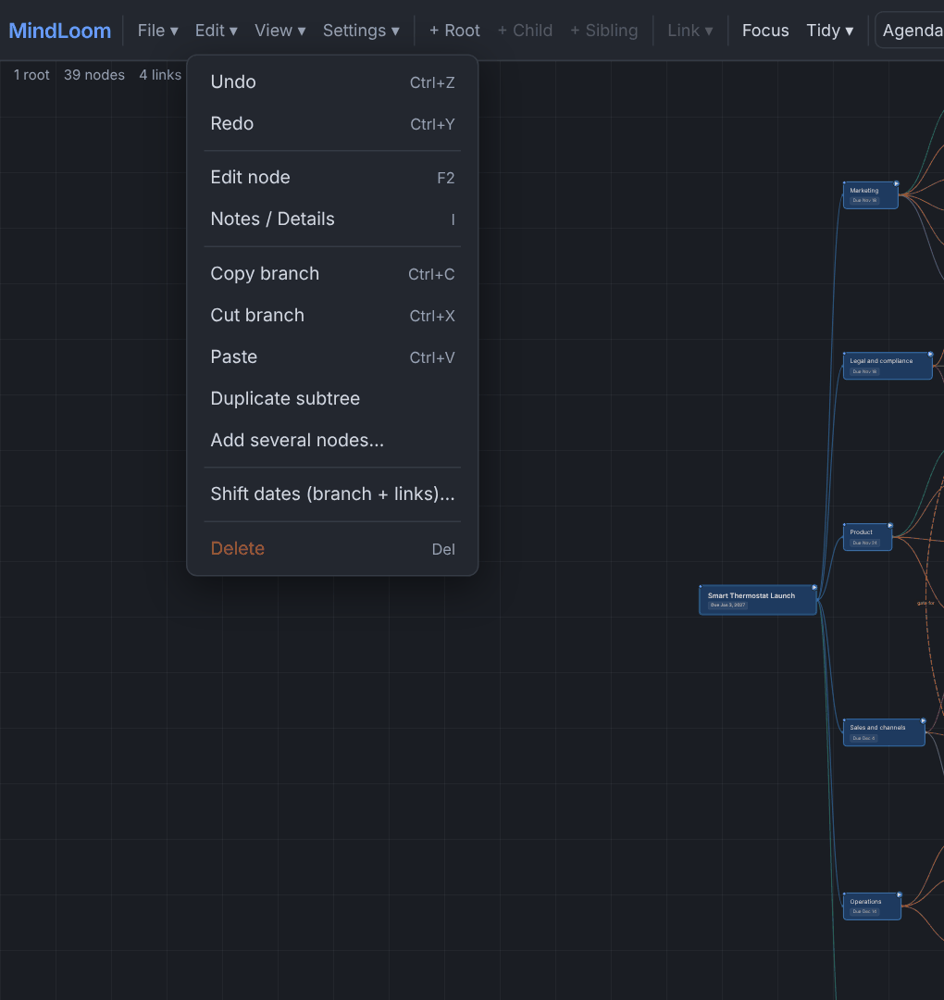
Hold Shift and click to select several nodes, then change colour, status or owner for all of them together.
Copy, cut and paste branches
Ctrl+C, Ctrl+X and Ctrl+V work on whole branches, including their details. Because the copy is held as text on your clipboard, you can paste a branch into a different map or another browser tab.
Add several nodes at once
Instead of typing nodes one by one, paste a list. Open Edit → Add several nodes… or right-click a node and choose Several child nodes….
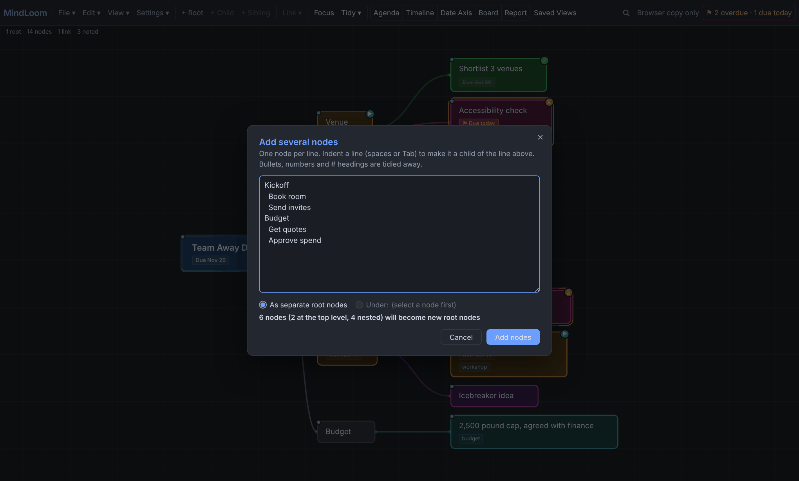
- One node is made per line. Indent a line to make it a child of the line above.
- Bullets (
-,*), numbers (1.) and#headings are removed for you. - Choose As separate root nodes, or Under: the selected node.
- A live count shows how many nodes you will get. Ctrl+Enter adds them.
The right-click menu
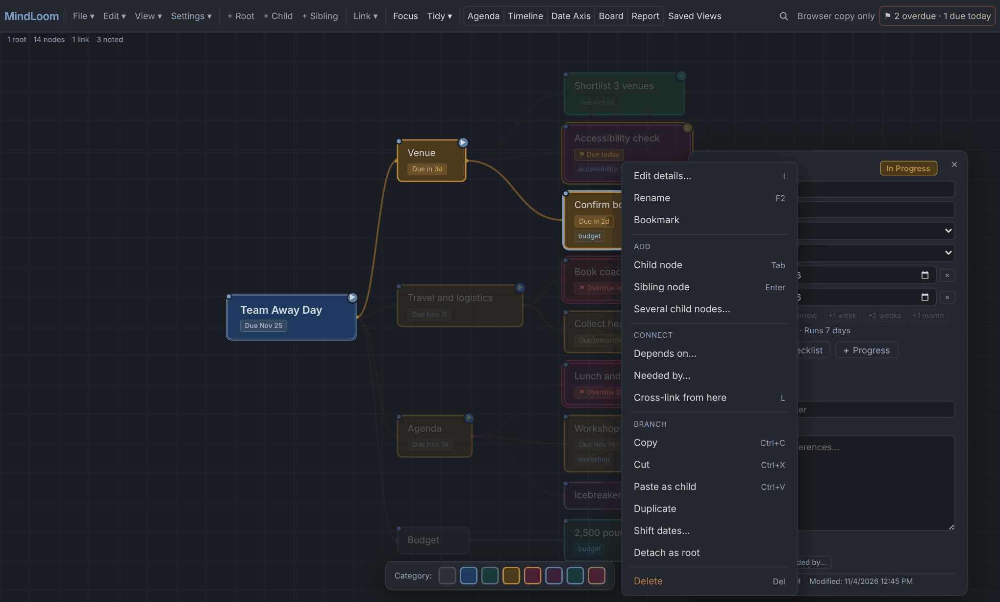
Colour
The coloured squares at the bottom of the screen set the category of the selected node. You can rename the categories (double-click a label in the legend) so a colour means something to your team, such as Risk or Decision.
Node details
Select a node and press I (or use the ··· button on the node) to open its details panel. You can drag the panel by its title bar and double-click the title to reset its position.
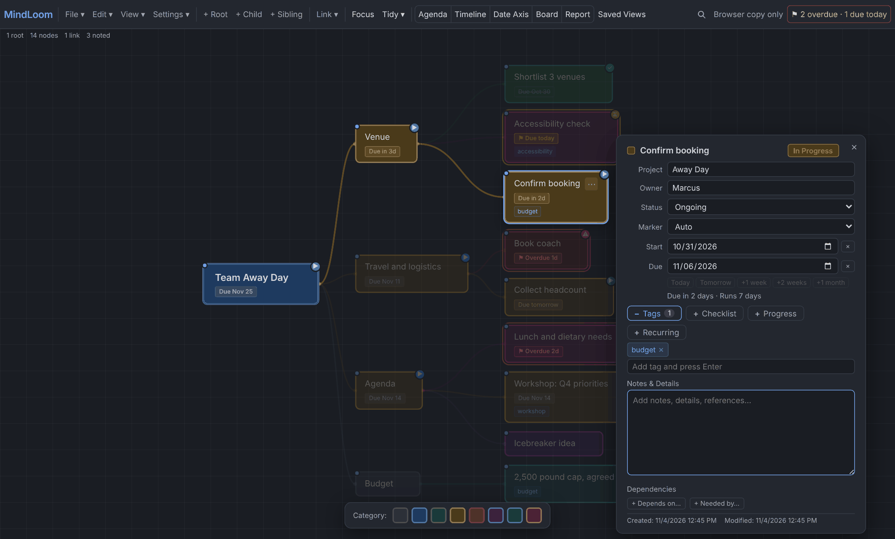
The basics
- Status: To do, Ongoing, Completed, Blocked, Awaiting and others. The date something was completed is recorded so reports can show when work finished.
- Start and due dates, with quick buttons (Today, Tomorrow, +1 week, +2 weeks, +1 month) that act on whichever date field you last clicked. Overdue and due-today items are flagged on the map and counted in the toolbar.
- Owner and Project, used for filters and the status report.
- Notes, where web addresses become clickable.
- Marker, the shape used for single-date items on the Date Axis.
Optional sections
Use the buttons in the panel to open these. They open automatically when the node already has content.
| Section | What it does |
|---|---|
| Tags | Free labels. Type and press Enter. Tags work with search and filters. |
| Checklist | Tick-off items inside a node, with a count shown on the node. |
| Progress | A percentage complete, shown as a bar on the node. |
| Recurring | Repeat every n days, weeks, months or years. Completing the item rolls its dates forward, ticks the checklist off and resets progress. |
Bookmarks
Right-click a node and choose Bookmark, then press B to jump straight to any bookmarked node, which is useful in very large maps.
Links and dependencies
Besides the parent and child structure, MindLoom has two ways to connect any two nodes.
Cross-links
A cross-link is a dashed arrow between two nodes that are not parent and child. Select a node and press L (or use the Link menu), then click the node to link to. You can give the link a label. They are good for "is related to" or "feeds into".
Dependencies
A dependency says one item cannot finish until another has. In the details panel use Depends on and Needed by. Dependencies are drawn as orange arrows from the prerequisite to the dependent, turn muted green once the prerequisite is done, and show a Waiting on badge while something is outstanding. MindLoom stops you creating circular dependencies.
Connector style
Under Settings, Connectors switches between curved lines and squared (right-angled) lines, which suit technical diagrams.
Layouts and Tidy
Arrange nodes yourself by dragging, or let MindLoom do it with the Tidy menu. Each layout can be applied to the whole map or only the selected branch.
- Horizontal tree: left to right, siblings ordered by due date.
- Vertical tree: top to bottom.
- Balanced tree: the root in the middle and branches split left and right. Best for large maps.
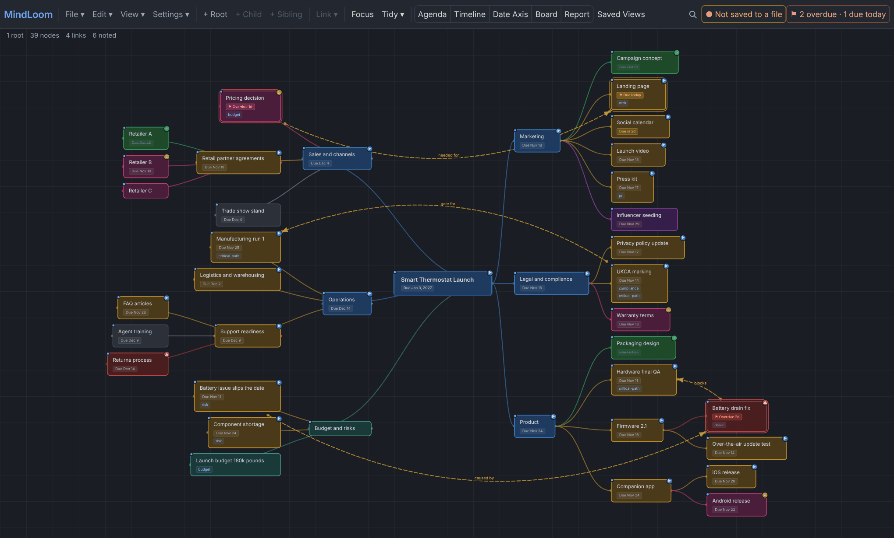
Snap to grid and lane bands (Settings) keep manual layouts neat. Fit All (F) and Centre (Home) help you find your way back.
Presentation mode
Press P to walk through your map one node at a time with the arrow keys, with Esc to leave. It is handy for talking a team through a plan.
Agenda, Timeline and Board
The same map can be viewed in several ways. They all read the same data, so a change in one appears in the others.
Agenda A
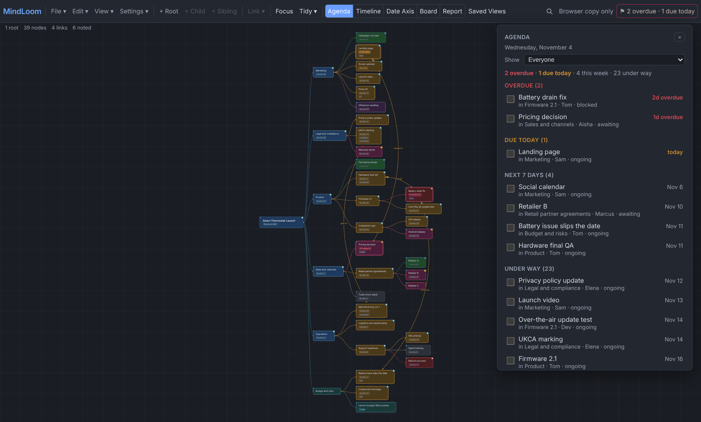
A side panel that lists your tasks by urgency, with an owner filter. Tick a task to complete it, and tick checklist items inline.
Timeline T
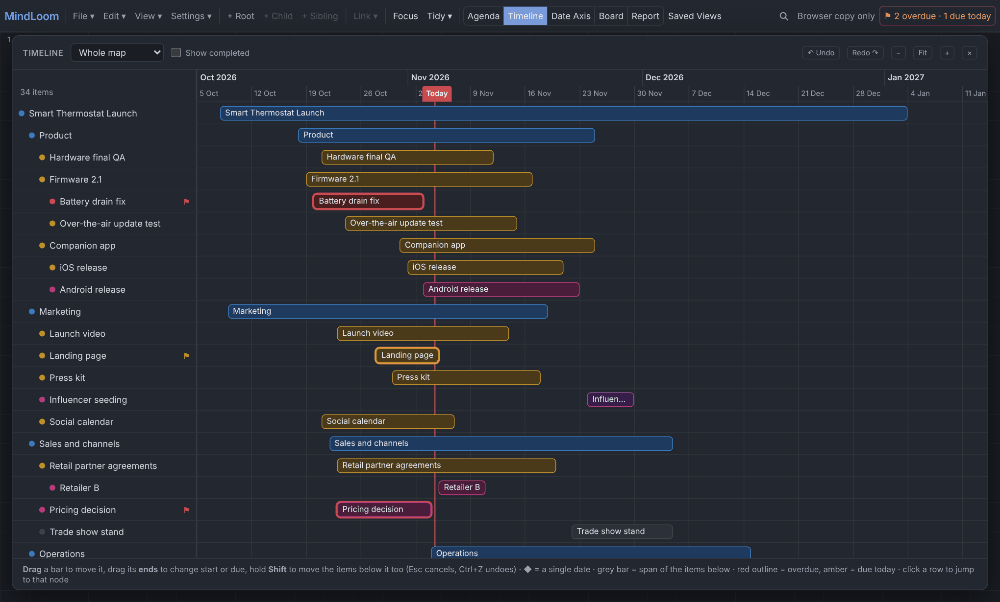
A Gantt-style chart of items that have dates. Drag a bar to move it, or drag its ends to change the start or due date.
Board K
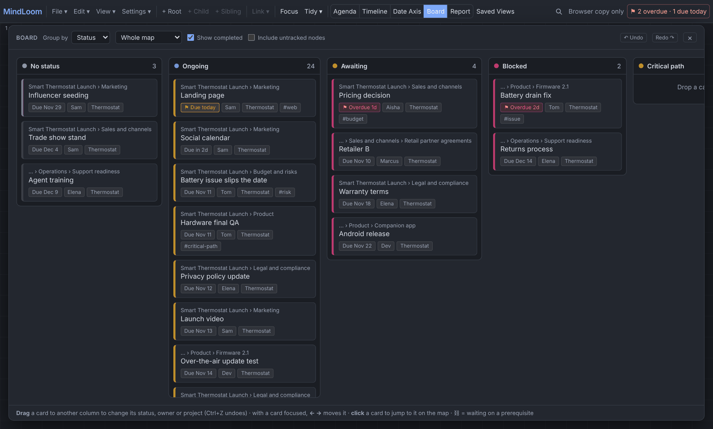
A kanban board with a column per status. Drag a card to another column to change its status.
Statistics S
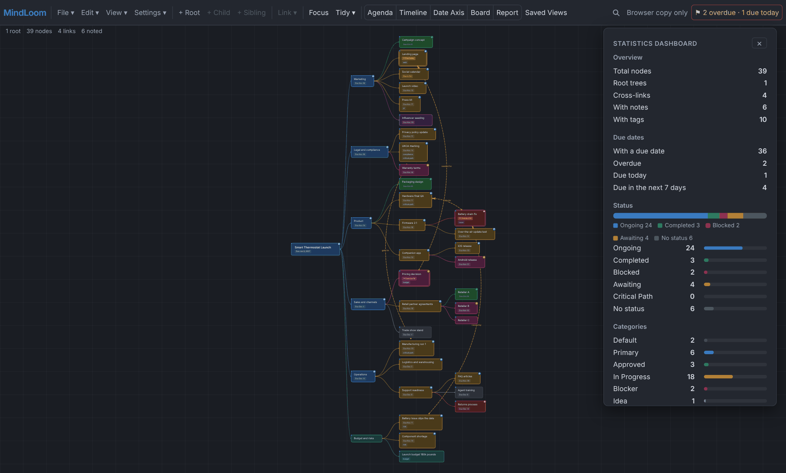
Date Axis, critical path and baselines
The Date Axis button on the toolbar lays your map out along a calendar, so a plan becomes a roadmap. Items with a start and due date become bars, items with one date become markers, and workstreams become swimlanes. Switching it off puts every node back where it was.
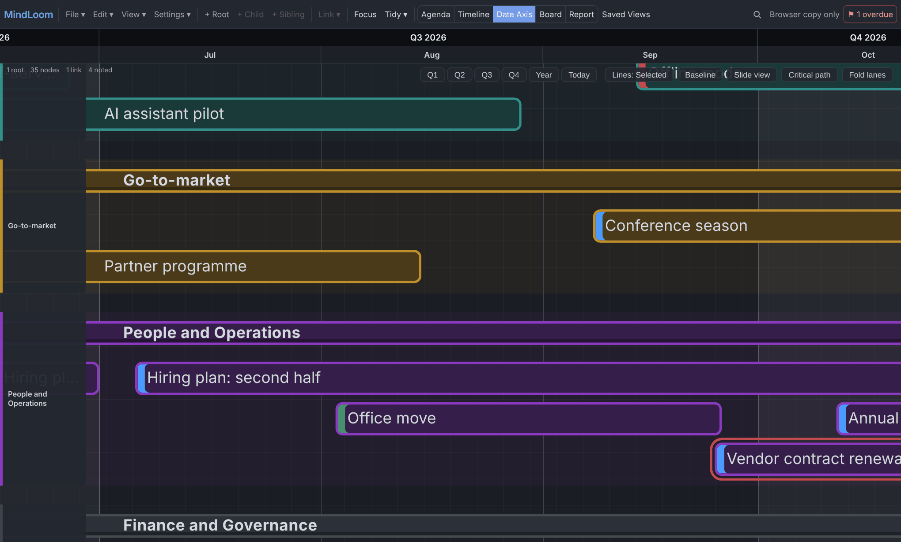
- Zoom to Q1, Q2, Q3, Q4 or the whole Year, and jump to Today.
- Lines can be Off, Selected (only the selected node's links) or All.
- Fold lanes one at a time or all at once to focus on what matters.
- Items with no date are hidden. A button shows how many and brings them back.
Critical path
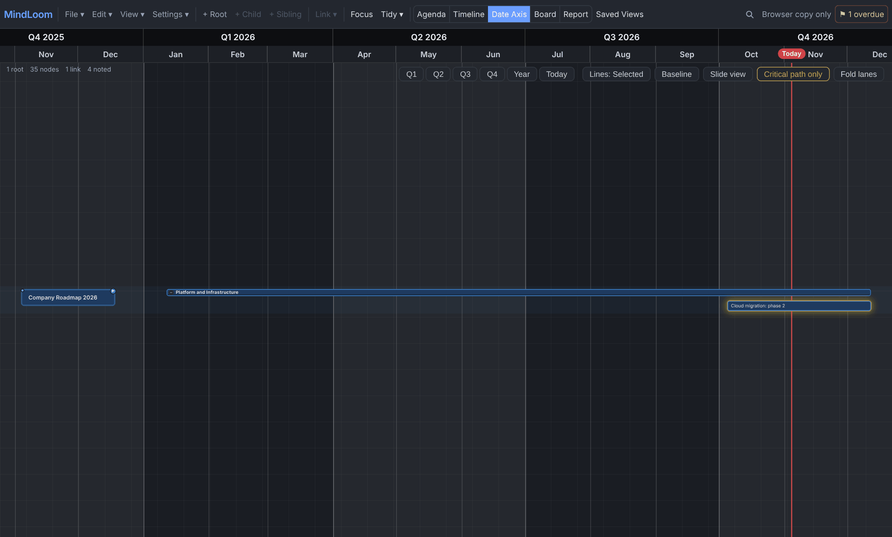
Mark important items with the Critical status, then press Critical path to show only those items and the dependency links between them.
Slide view
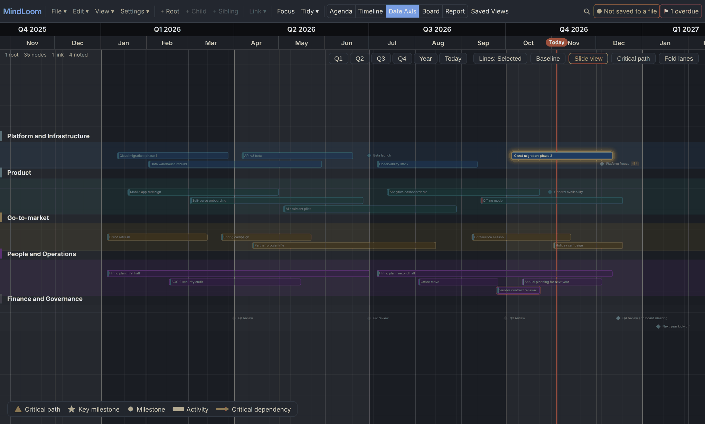
Slide view produces a clean, labelled layout that drops straight into PowerPoint. Non-critical items are dimmed, a legend is added, and you can export a high-resolution PNG.
Baselines: planned versus actual
Open Baseline (or Settings → Baselines) and save the current start and due dates as a named plan. You can keep up to five. After dates change, a dashed ghost bar shows where each item was planned, with the slip in days (for example +12d or -5d). The ghosts appear in PNG exports and printouts, and the status report lists what slipped.
Shifting dates in bulk
If a whole stream moves, use Shift dates (Edit menu or right-click) to move a node, or a branch together with its linked nodes, by a number of days.
Status report
Press R for a summary of the map that you can send straight to stakeholders.
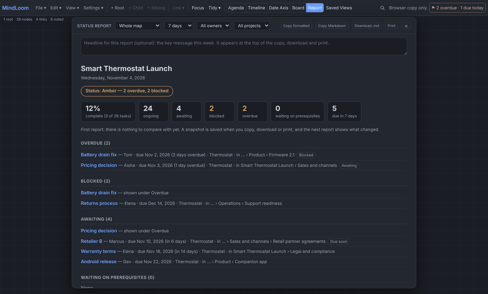
What is in it
- A Red, Amber or Green health line that says what drove the rating.
- An optional headline that you type. It goes into the copy, download and print.
- Changes since the last report: newly completed, newly overdue, newly blocked, date changes, and items added or removed.
- Against baseline: what slipped, what is earlier, and what is on plan.
- Sections for Overdue, Blocked, Awaiting, Waiting on prerequisites, Critical path, Due soon and Completed, with days overdue and checklist or progress on each line.
- Workload by owner, and completion counted on tasks rather than group headings.
- Filters by owner and project, for the whole map or a selected branch.
Getting it out
| Button | Use it for |
|---|---|
| Copy formatted | Pasting into Outlook, Teams, Gmail or Word as real headings and bullets |
| Copy Markdown / Download .md | Wikis, GitHub and other Markdown tools |
| A paper copy or PDF |
Finding things
Command palette Ctrl+K
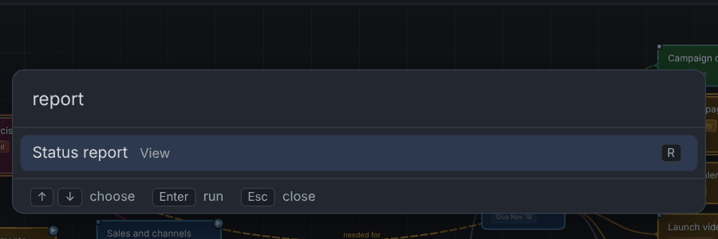
Search and filters
- / opens Search, to find nodes quickly.
- Ctrl+F opens the Filter bar, to narrow the map by status, owner, project, category, tag and due date.
- Hide Completed (Settings) clears finished work off the canvas.
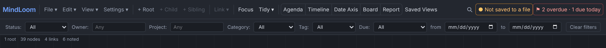
Focus G
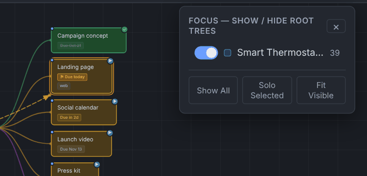
When a map has several roots, Focus lets you show only the ones you choose.
Saved Views V
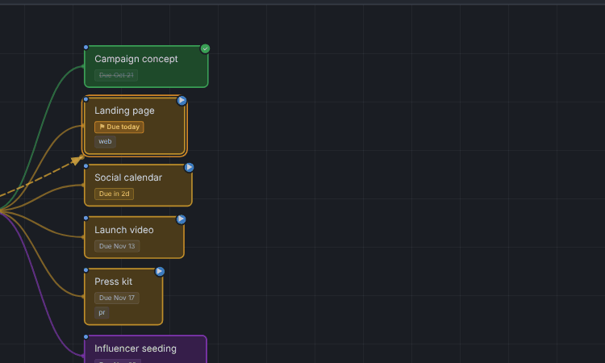
Save a combination of filters, layout and view under a name, and recall it any time. For example "Overdue for Marcus" or "Wave 2 only".
Highlight Selection
In Settings, Highlight Selection fades everything unrelated to the selected node so only its own links and dependencies stand out.
Application Mapping Structures Optional
Use this to show how systems depend on each other, for example during a migration, so that nothing breaks or gets forgotten. It is off by default, so people who just want a mind map never see it.
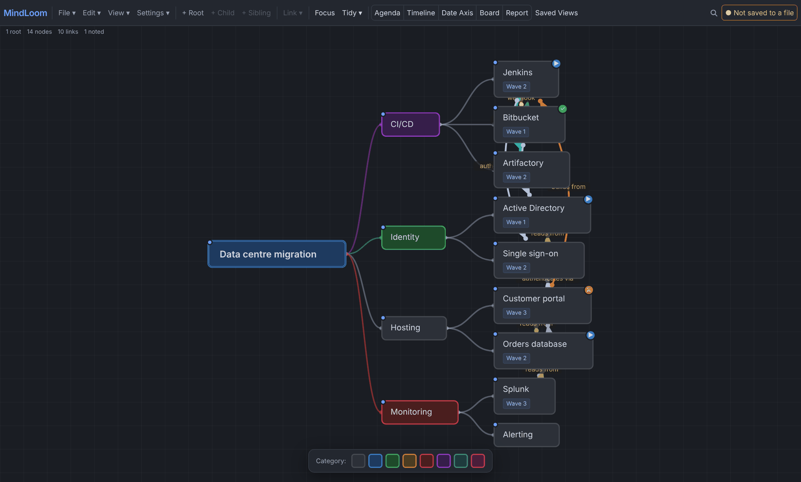
Turning it on
Open Settings → Application Mapping Structures and switch it to On. The setting is saved in the file, so it belongs to that map. Turning it off again hides the extra features but keeps the information in the file.
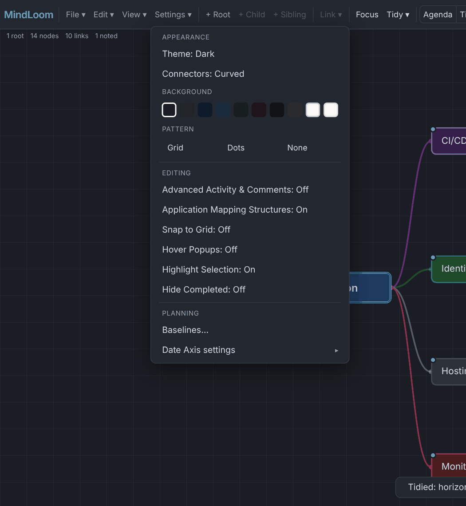
How to read a relationship
Every relationship reads "A relies on B". It can be a dependency (A waits for B) or a cross-link drawn from A to B, with the arrow pointing at B.
Link types
When you create a link, a dialog asks what kind it is. Each type has its own colour.
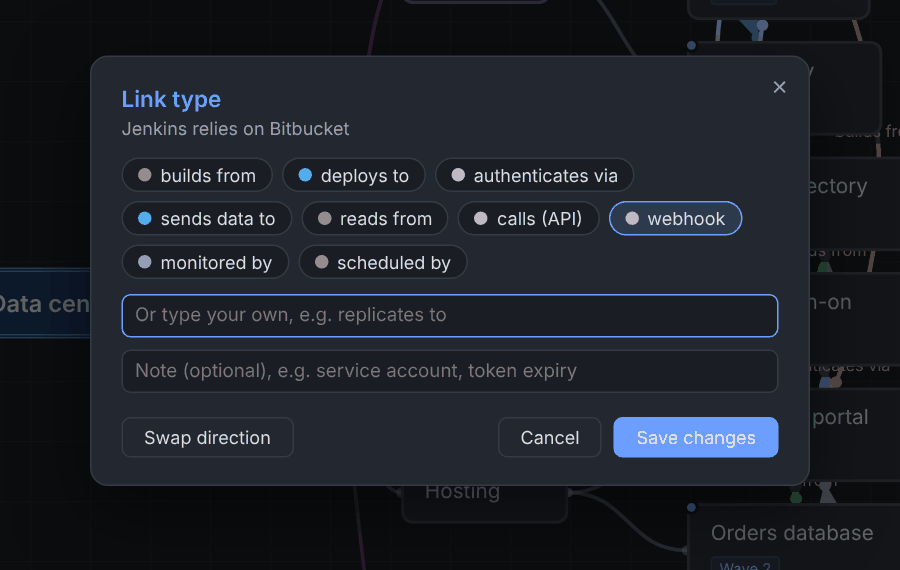
| Type | Use for |
|---|---|
| builds from | A is built from code or artifacts held in B |
| deploys to | A deploys onto B |
| authenticates via | A signs users or services in using B |
| sends data to / reads from | Data flowing between systems |
| calls (API) | A calls B's interface |
| webhook | B notifies A when something happens |
| monitored by / scheduled by | Operational relationships |
You can also type your own type (up to 40 characters) and a short note, such as "service account" or "token expiry". To change a link later, open the details of either node and click the pencil next to the link. Swap direction is available there too.
Migration waves
In the details panel, Migration wave assigns Wave 1 to Wave 8. A wave is stored as an ordinary tag (for example Wave 2), so it works with search and filters and copies with the node.
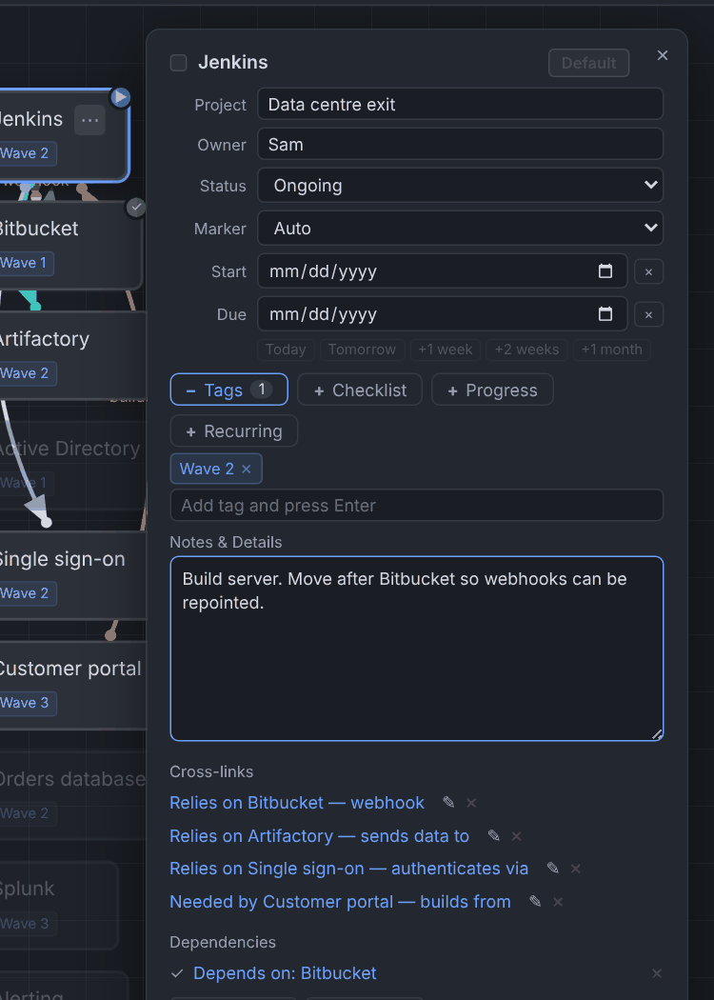
Impact view
Right-click an application and choose Show impact (or use View → Dependencies). Everything that relies on it lights up, the rest fades, and each node shows how many steps away it is.
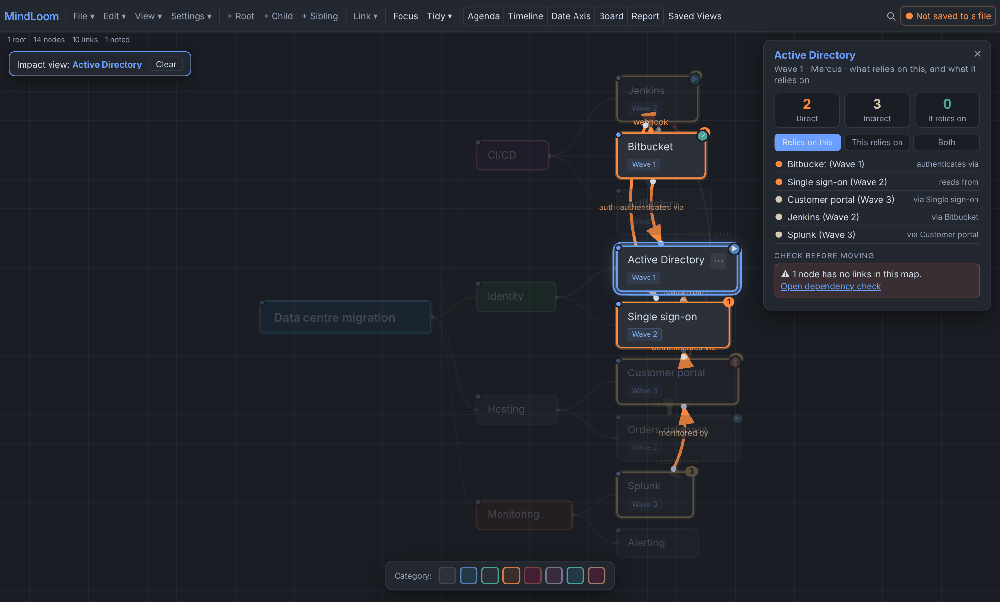
- Relies on this: everything that would be affected if this application moved or failed.
- This relies on: everything this application needs in order to work.
- Both: the whole picture.

Dependency check
Once the feature is on, the View menu gains a Dependencies section with Show impact of selected and Dependency check. The check looks for things that are easy to forget.
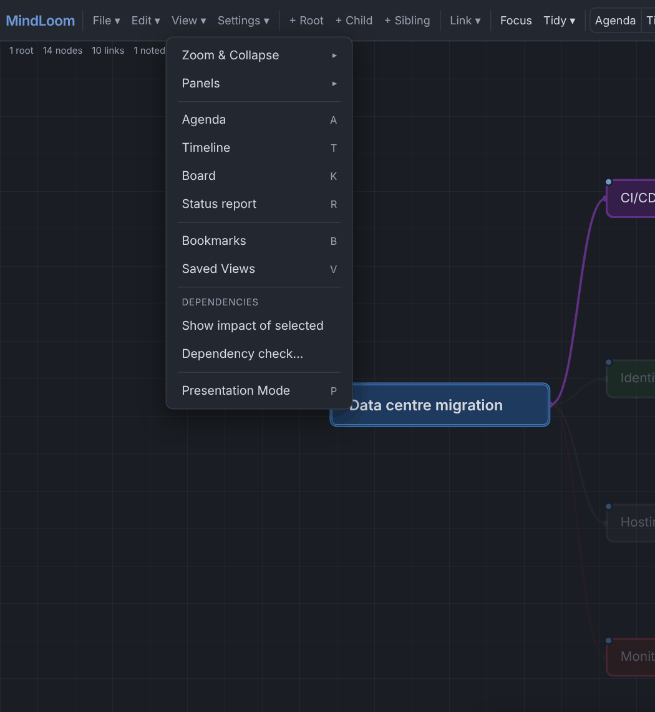
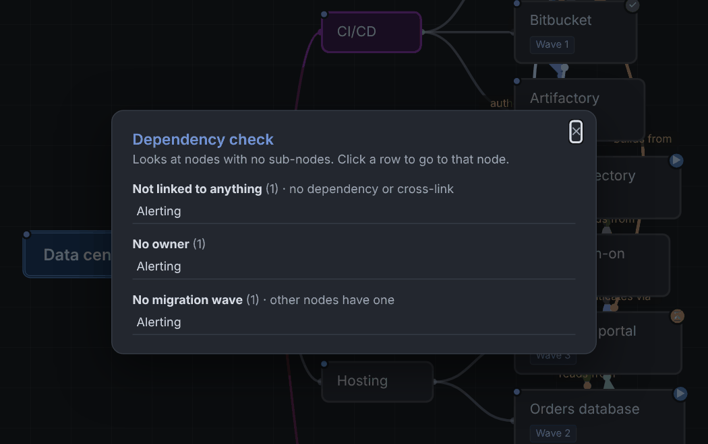
- Items not linked to anything.
- Items with no owner.
- Items with no wave, when other items have one.
- Waves that look out of order, where something in an earlier wave relies on something in a later one.
Advanced Activity & Comments Optional
Switch this on to keep a history of changes and comments on each item. It is off by default and saved per map.
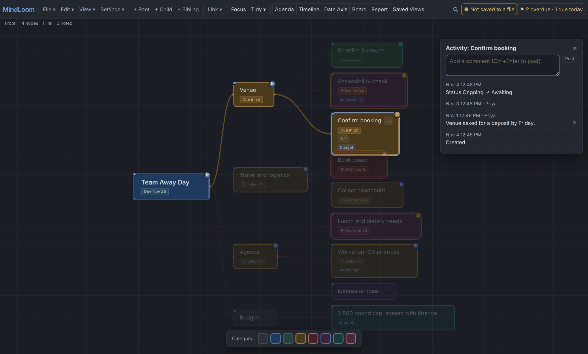
Turning it on
Choose Settings → Advanced Activity & Comments. Optionally set Your name there so entries are signed (kept in your browser).
What it records
- Changes to status, start date, due date and owner.
- Typed comments. Press Ctrl+Enter to post.
- When you move a single due date, you are asked for a reason: Dependency, Scope change, Resourcing, Client request, or your own.
Open it with the speech-bubble button next to Dependencies in the details panel, or the comment chip on a node. Quick repeat edits merge into one entry, and the newest 50 entries per node are kept. The status report shows the reason for a moved date and the latest note.
Saving, files and backups
How your work is kept
| What | Where | Notes |
|---|---|---|
| Automatic backup | Your browser | A safety net only. It can be lost if browser data is cleared. |
| Saved file | Wherever you save it | The only copy that moves between computers and keeps everything. |
| Rolling backups | Your browser | File → Restore backup. Your previous map is kept here as "last session". |
MindLoom always opens on a fresh map. To continue earlier work, use File → Load or Restore backup.
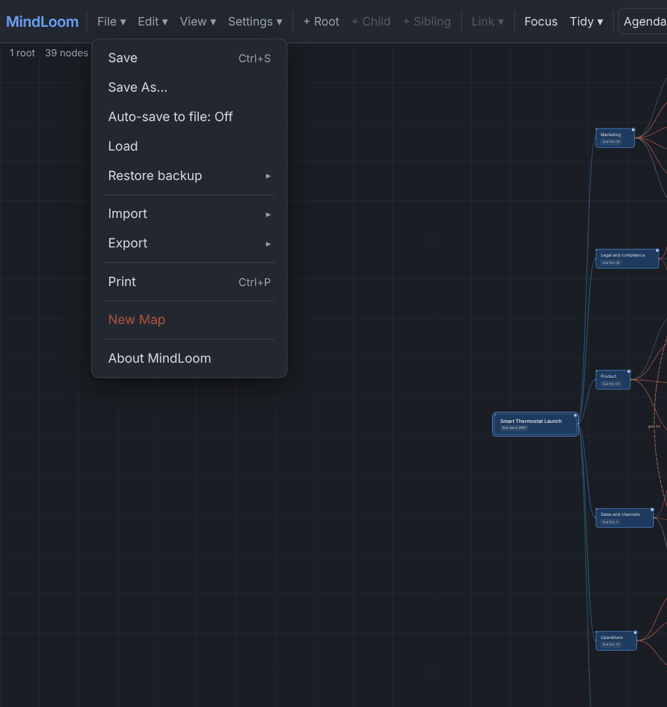
Saving
- Save (Ctrl+S) and Save As write a file in MindLoom's own format. Use this for your real work.
- Auto-save to file keeps your chosen file up to date as you work (in browsers that support it). The toolbar shows the status.
- The save badge on the toolbar tells you when there are unsaved changes, and reminds you every ten minutes.
Export and import
- Export to CSV, Markdown or a PNG image. The PNG is a clean picture for slides and documents.
- Import from CSV or Markdown to bring in a list from a spreadsheet or a document.
- Print (Ctrl+P) prints the map. Choose "Save as PDF" in the print dialog to make a PDF.
Settings and appearance
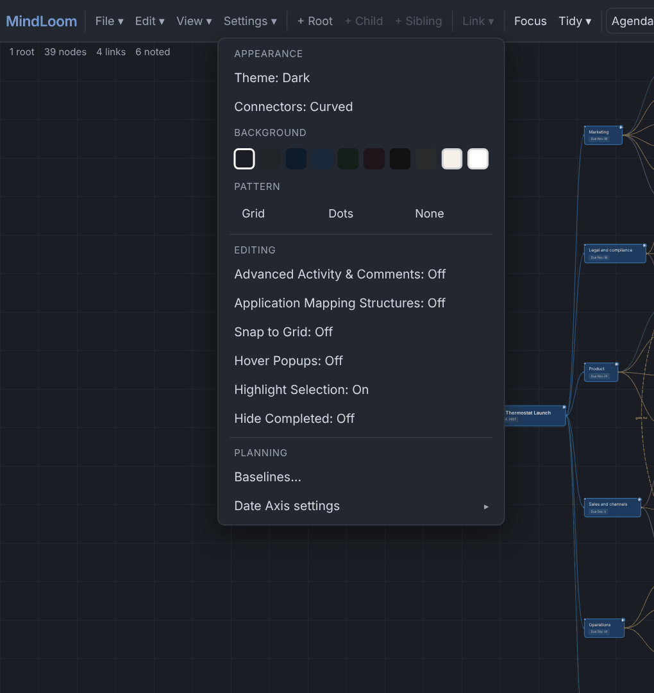
| Setting | What it does |
|---|---|
| Theme | Dark or light |
| Connectors | Curved or squared lines |
| Background and pattern | Canvas colour, and a grid, dots or none |
| Advanced Activity & Comments | History and comments per item (details) |
| Application Mapping Structures | Link types, waves and impact view (details) |
| Snap to Grid | Keeps nodes aligned when you drag |
| Hover Popups | Show a preview when you hover a node (off by default) |
| Highlight Selection | Fade everything unrelated to the selected node |
| Hide Completed | Remove finished items from view |
| Baselines, Date Axis settings | Planning options (details) |
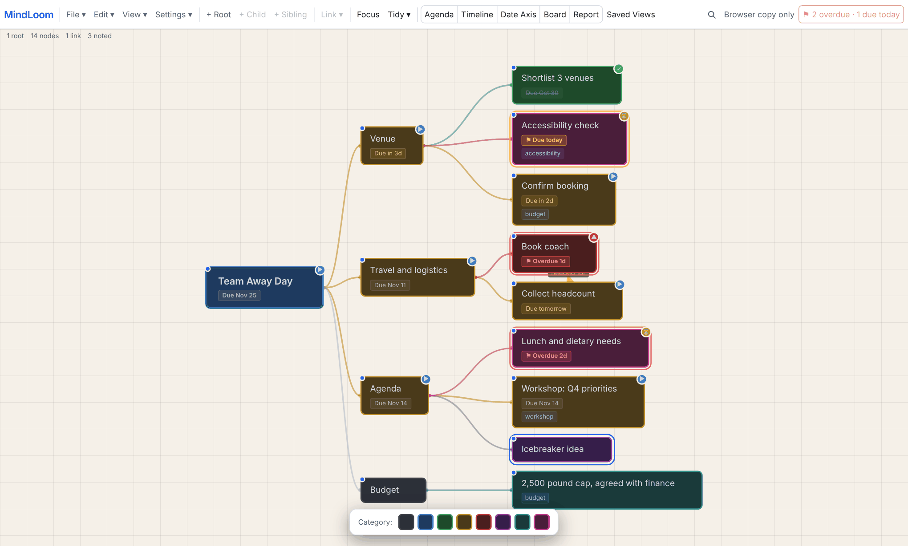
The View menu collects panels and view options in one place.
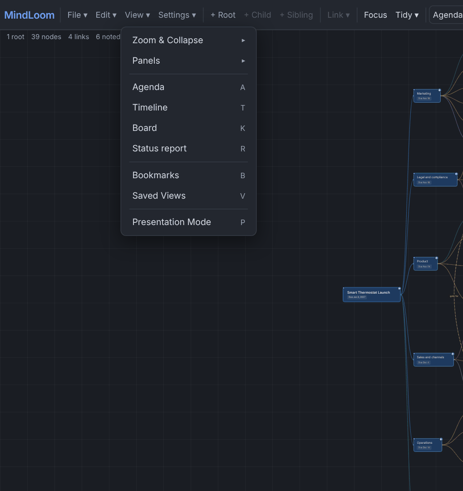
Keyboard shortcuts
Press ? inside MindLoom to see this list any time. On a Mac, use Cmd in place of Ctrl.
| Key | Action | Key | Action |
|---|---|---|---|
| Tab | Add child | A | Agenda |
| Enter | Add sibling | T | Timeline |
| F2 | Edit node | K | Board |
| Del | Delete node | R | Status report |
| Space | Collapse / expand | S | Statistics |
| I | Notes and details | G | Focus roots |
| L | Start a cross-link | V | Saved views |
| / | Search | B | Bookmarks |
| F | Fit all in view | P | Presentation mode |
| Home | Centre and reset zoom | Esc | Deselect / close panels |
| Ctrl+F | Filter bar | Ctrl+K | Command palette |
| Ctrl+S | Save to file | Ctrl+P | |
| Ctrl+C / X / V | Copy, cut, paste branch | Ctrl+Z / Y | Undo, redo |
| Shift+Click | Multi-select | Ctrl+Drag | Re-parent a node |
| Arrows | Move between nodes | ? | Help and shortcuts |
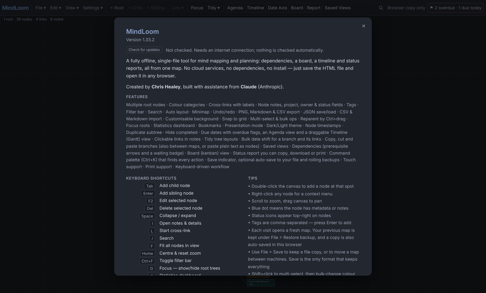
Example maps
Download a file, then open MindLoom and choose File → Load. Right-click the link and choose "Save link as" if your browser tries to display the file instead.
Application migration
A data centre migration with link types, waves and owners. Turn on Application Mapping Structures to explore the impact view.
Product launch plan
About 40 nodes with statuses, dates, dependencies and a status report to try.
Customer portal programme
A large programme map for testing layouts, filters and Focus.
Annual roadmap
A full year of workstreams for the Date Axis, critical path and Slide view.
Team away day
A small, friendly map, ideal for a first look.
Personal to-do list
A different use: today, this week, work and home.
Dates in the demos are set relative to the day you load them, so the example always looks current.
Questions and fixes
My map has disappeared.
MindLoom opens on a fresh map each visit. Your previous map is under File → Restore backup (look for "last session"). If you saved a file, use File → Load.
Can several people work on one map at the same time?
No. MindLoom is a single-user, offline tool. To share, save a file and send it, or place it on a shared drive. Agree who has the latest copy, as the last person to save wins.
Is my data sent anywhere?
No. Everything stays in your browser and in files you save. The only time MindLoom contacts the internet is when you press Check for updates in the About screen.
The save badge says "Browser copy only".
That means no file copy has been saved yet. Press Ctrl+S.
Why can't I see the link types or Show impact?
They belong to Application Mapping Structures, which is off by default. Turn it on in Settings.
Why are some nodes missing on the Date Axis?
Items with no dates are hidden there. Use the button that shows how many are hidden to bring them back, or give them dates.
My links look curved when I wanted square lines.
Choose Settings → Connectors and switch to Squared.
The map has become slow.
Very large maps (several hundred nodes) can slow down. Collapse branches you are not using, use Focus to hide whole root trees, or use Hide Completed.
Dates like 03/04/2026 came in the wrong way round.
When importing from CSV, ambiguous dates are read as day/month/year. MindLoom tells you how many it read that way, so you can check them. Using the form 2026-04-03 avoids any doubt.
I opened a file from a newer version in an older one.
Older versions open the file but ignore newer parts, and would drop them if you saved. Keep everyone on the same version where you can. See Releases and updates.
Technical reference
For IT teams, developers and anyone who wants to know how MindLoom works.
Design in brief
- One file. The whole application (HTML, CSS and JavaScript) is a single
MindLoom.html, with no build step and no runtime dependencies. - Offline. It never loads scripts, fonts or data from the network.
- Local data. State is held in memory, backed up to the browser's
localStorage, and saved by the user as a JSON file. - Plain JavaScript with no framework. The map is rendered as absolutely positioned DOM elements over an SVG layer for connectors.
Browser support
Any current desktop browser (Chrome, Edge, Firefox, Safari) runs MindLoom. Auto-save to file uses the File System Access API, which is available in Chromium-based browsers such as Chrome and Edge. Elsewhere you can still use Save and Save As.
Built-in self-test
The About screen has a Run self-test button (revealed by clicking the version number five times). It checks date parsing, data cleaning, CSV parsing and other core routines, and reports pass or fail.
Import formats
CSV needs a header row and a text column (text, topic, name or title). Recognised optional columns:
| Column names | Meaning |
|---|---|
id, parent (or parent_id) | Hierarchy by ID, as produced by MindLoom's own CSV export |
parent name | Hierarchy by parent's name |
notes (or description), status, tags, project, owner | Node fields |
category (or colour, color) | Colour category |
due, start and common variants | Dates |
The importer handles quoted fields, embedded newlines and a byte-order mark. Cells starting with =, +, - or @ that were protected by a leading apostrophe on export are restored. Parent cycles are broken so nothing becomes unreachable. Markdown import turns a document's structure into nodes.
File format
A saved map is plain, human-readable JSON. The file records its format name (MindLoom) and a numeric version (currently 5). Older files open normally. Older programs ignore parts they do not know about.
{
"format": "MindLoom",
"version": 5,
"nodes": [ ... ],
"crossLinks": [ { "from": 3, "to": 7, "label": "", "type": "builds from" } ],
"nextId": 42,
"bookmarks": [ ... ],
"savedViews": [ ... ],
"baselines": [ ... ],
"trackActivity": false,
"depMap": false,
...
}Top-level keys
| Key | Holds |
|---|---|
nodes, crossLinks, nextId | The map itself |
colorLabels, bgColorId, bgPatternId, lightTheme, connStyle | Appearance |
bookmarks, hiddenRoots, savedViews, hideCompleted, snapToGrid, hoverPopup, focusSel | Views and preferences |
dateMode, dateOrigin, laneBands, linkVis, barColors, showUndated, critOnly, axSlide | Date Axis settings |
baselines, activeBaseline, reportState | Planned dates and the last-report snapshot |
trackActivity, depMap | Whether the optional features are on for this map |
A node
{
"id": 12, "text": "Jenkins", "x": 540, "y": 210,
"parentId": 8, // null for a root
"collapsed": false, "colorId": "default",
"notes": "", "project": "", "owner": "Sam", "status": "ongoing",
"tags": ["Wave 2"], // a migration wave is just a tag
"due": "2026-12-01", "start": "",
"deps": [14], // ids this node waits for
"createdAt": "...", "modifiedAt": "...",
"log": [ ... ] // activity history, when used
}Cross-links type is optional free text up to 40 characters. Dates are ISO YYYY-MM-DD.
nextId higher than any node id, and make sure every parentId and deps entry points to an existing node. MindLoom cleans up bad data when it loads a file, but it is wise to keep a backup.Hosting and security
Ways to deploy
- Hand out the file. Put
MindLoom.htmlon a shared drive or send it. Users open it directly from disk. - Serve it internally. Host the file on any web server or intranet page. No server-side code is required, so a static file server is enough.
- Per-location storage. The browser keeps each map backup separately for each address (for example a different file location or URL), so moving the file or changing its address means the browser backups do not follow it. Saved files are not affected.
Security posture
The page declares a strict Content Security Policy, so even if something went wrong it could not load outside code or send data elsewhere:
default-src 'none';
script-src 'unsafe-inline'; style-src 'unsafe-inline';
img-src data: blob:;
connect-src https://raw.githubusercontent.com;
form-action 'none'; base-uri 'none';
frame-src 'none'; object-src 'none'- The only allowed network destination is
raw.githubusercontent.com, used solely by the manual Check for updates button. - MindLoom never checks for updates by itself and sends no analytics or telemetry.
- Inline script is needed because the app is a single file. It cannot be framed, cannot post forms and cannot load plugins.
- CSV export protects cells that begin with spreadsheet formula characters.
Data handling
Maps are stored only in the user's browser storage and in files the user chooses to save. If your organisation needs to control where files go, treat a saved map like any other document of that sensitivity.
Releases and updates
- Version. The app version is shown in the About screen. The file format version (currently 5) is separate and changes rarely.
- Checking for updates. About → Check for updates reads
version.jsonfrom the project'smainbranch on GitHub and says whether a newer version exists. - Publishing a release (maintainers). Replace
MindLoom.html, update the version and notes inversion.jsonand the header ofREADME.md, commit, and updatemain. - This guide. It is a static page in the
docsfolder, served with GitHub Pages. Editdocs/index.htmland commit to update it.
{ "version": "1.33.2", "date": "2026-11-04", "notes": "What changed" }